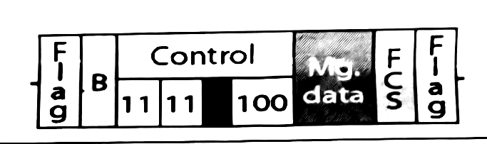

The papers
Three mid-sem papers — 2023, 2024 and 2025 — read end to end, every question worked out, and then a predicted paper for September 2026 built from what actually repeats.
What actually gets asked
3 papers read end to endThree papers is a small sample, but this department is unusually consistent: the same five or six things come back almost every year, in almost the same words. The rows tinted below appeared in every single paper we have — if you learn nothing else, learn those.
| Topic | 23 | 24 | 25 | of 3 |
|---|---|---|---|---|
| ALOHA — draw the flow chart and explain it | 3 | |||
| Layers — name them and give each layer’s job | 3 | |||
| PDR, throughput, latency and its components | 3 | |||
| Go-Back-N with timing and sliding-window diagrams | 2 | |||
| CDMA — build a Walsh table and decode | 2 | |||
| CSMA family (persistence methods, CD versus CA) | 2 | |||
| Topologies compared | 2 | |||
| Pure ALOHA throughput numerical | 1 | |||
| CSMA/CD minimum frame size numerical | 1 | |||
| Bandwidth-delay product and link utilisation | 1 | |||
| Connecting devices compared (hub, switch, router, gateway) | 1 | |||
| Selective Repeat ARQ, drawn step by step | 1 | |||
| HDLC frame — read the fields off a diagram | 1 | |||
| Optical fibre structure | 1 | |||
| Five components of data communication | 1 | |||
| Physical versus IP versus port address | 1 |
filled = it appeared that year · tinted rows came up in every paper we have
Read it this way
Two things are near-certain. Go-Back-N drawn properly and the CDMA Walsh table have both appeared in the last two years, and the CDMA question is worth 5 marks on its own. Note the instruction that came with it in 2024 and again in 2025: “only theoretical explanation is not sufficient — draw the appropriate codes, data, matrix, graph.” Words alone score nothing there.
The numericals rotate. 2023 was the numerical-heavy paper (ALOHA throughput, CSMA/CD frame size, bandwidth-delay utilisation) and 2024 and 2025 were almost entirely descriptive. That is the main risk for 2026: two descriptive years in a row makes a numerical return more likely, not less, and the three in the 2023 paper are the three that exist.
What is on the syllabus but has not been asked yet: CRC and Hamming worked by hand, bit and byte stuffing, and the learning bridge with the loop problem. All four are on the mid-sem topic list your sir gave out, and none has appeared in three years. Do not skip them.
Predicted paper — September 2026
our reading, with full solutionsInstructions. [CO] indicates course outcome. Marks are in the right-hand column. Where a diagram is asked for, a written description alone will not score.
Solution
The five components are message, sender, receiver, transmission medium and protocol.
| Component | Its role |
|---|---|
| Message | The information being communicated — text, numbers, pictures, audio, video. |
| Sender | The device that sends the message: a computer, phone, camera, sensor. |
| Receiver | The device that receives it. |
| Transmission medium | The physical path the message travels along: twisted pair, coax, fibre, or air. |
| Protocol | The set of rules both ends agree on, so that the bits actually mean something at the far end. |
The one that is not in the path is the protocol. It is not a wire or a box — it is an agreement held simultaneously at both ends.
Two devices can be joined by a perfect cable and still communicate nothing. A Hindi speaker and a Japanese speaker in the same room have message, sender, receiver and medium all present, and still exchange nothing. The missing piece is the protocol.
Solution
| Topology | Links | If one link fails | Main weakness |
|---|---|---|---|
| Mesh | n(n−1)/2 | Nothing else is affected — there is always another path | Cost. Cabling and port count explode with n |
| Star | n | Only that one station is cut off | The hub is a single point of failure |
| Bus | 1 backbone + n drops | A break in the backbone can split or kill the network | Hard to fault-find; limited length |
| Ring | n | A single break stops the ring unless it is dual | A signal passes through every station, so delay grows with n |
Full mesh of n nodes:
Each node connects directly to every other node, which is n−1 links from each node. Multiplying n × (n−1) counts every link twice — once from each end — so divide by two.
For six nodes: 15 links, 5 ports each
Solution
This question has been on every paper we have. Draw the chart — do not just describe it.
Step by step:
- Send immediately. A pure ALOHA station transmits whenever it has a frame. It does not listen first — that is what separates ALOHA from CSMA.
- Wait one round trip. The station waits 2 × Tp for an acknowledgement, which is the longest a reply can take.
- Acknowledged? If yes the frame got through and the station stops.
- Increment K. If no acknowledgement came, a collision is assumed and the attempt counter goes up.
- Check the limit. If K exceeds Kmax (usually 15) the frame is abandoned — otherwise a permanently jammed channel would retry forever.
- Binary exponential back-off. Pick R at random from 0 to 2K−1 and wait R × Tp before retrying.
Random, because two stations that collided would otherwise retry at exactly the same instant and collide again forever. Doubling, because a repeated collision is evidence that the channel is busy, so each failure widens the window a station picks from and thins the traffic out.
Solution
Packet Delivery Ratio — the fraction of sent packets that actually arrive, as a percentage. It measures reliability; a low PDR points to loss, congestion or a poor link.
Throughput — the rate at which data is successfully transmitted, in bits per second.
Throughput is not bandwidth. Bandwidth is the theoretical maximum the link could carry; throughput is what survives collisions, retransmissions, headers and congestion. It is always lower, often far lower.
Latency — the time for a packet to get from source to destination. It has four components:
| Component | What it is | What it depends on |
|---|---|---|
| Propagation delay | Time for the signal to travel the distance | distance ÷ propagation speed. Nothing else — not bandwidth, not frame size |
| Transmission delay | Time to push all the bits onto the link | frame size ÷ bandwidth |
| Processing delay | Time for routers and switches to handle the headers | device speed, number of hops |
| Queuing delay | Time spent waiting in buffers | traffic load — the only one that varies wildly |
Jitter — the variation in delay between consecutive packets.
It is an absolute value, so a delay that falls still counts. High jitter ruins voice and video even when the average latency is fine, because packets arrive unevenly.
Solution
CSMA/CD — Carrier Sense Multiple Access with Collision Detection.
- Carrier sense. Before transmitting, the station listens to the medium. If it is busy, it waits (1-persistent in Ethernet: it keeps listening and sends the moment it goes idle).
- Transmit and keep listening. While sending, the station monitors the line. If what it hears differs from what it is sending, a collision has occurred.
- Abort and jam. It stops immediately and sends a short jamming signal so that every other station also learns of the collision.
- Back off. It waits a random binary-exponential time and goes back to step 1.
For this to work the station must still be transmitting when the collision signal reaches it, which gives the minimum frame size condition:
Why wireless cannot do it. Three separate reasons, and any of them alone is fatal:
- The transmitter is deaf while it transmits. Its own signal at its own antenna is many orders of magnitude stronger than anything arriving from a distant station, so it simply cannot hear a collision happening.
- The hidden terminal problem. A and C may both be in range of B but out of range of each other. Each senses an idle channel, both transmit, and the frames collide at B — and neither sender ever knows.
- The exposed terminal problem. The reverse case, where a station holds back unnecessarily because it hears a transmission that would not actually have interfered.
What is used instead: CSMA/CA — collision avoidance. Since a collision cannot be detected, it must be prevented:
- Interframe space (IFS). After the channel goes idle, wait a fixed gap before even starting the countdown. A shorter IFS means higher priority.
- Contention window with back-off. Choose a random slot count and count down only while the channel is idle, freezing the counter when it goes busy.
- Explicit acknowledgement. Silence cannot be read as success, so every frame must be acknowledged; no ACK means retransmit.
- Optional RTS/CTS handshake to solve the hidden terminal problem.
Solution
| Address | Form | Scope of delivery | Used by |
|---|---|---|---|
| Physical (MAC) | 48 bits, burned into the NIC, six hex octets | Node to node, inside one LAN only | Switch / bridge, data link layer |
| Logical (IP) | Assigned by software, hierarchical | Host to host, across networks | Router, network layer |
| Port | A 16-bit number identifying a process | Process to process | Transport layer |
What changes on the way. This is the part worth the marks:
- The IP addresses stay the same from end to end. They identify the two hosts, and that does not change just because the packet crosses a router.
- The MAC addresses change on every hop. A frame is addressed to the next device on this LAN — often a router, not the final destination — so the router strips the old frame, keeps the packet, and builds a new frame with a new source and destination MAC for the next link.
- The port numbers stay the same throughout; they are only read at the two ends.
A MAC address is flat — it carries no network part — so a router cannot use it to decide where to send something. That is exactly why the IP address exists, and why a frame addressed only by MAC can never leave its LAN.
Solution
Why layers. A network is far too complicated to design as one lump. Layering cuts the job into pieces, gives each piece one clear duty, and lets each layer use the one below without knowing how it works. The benefits: a layer can be replaced without touching the others, different vendors can implement different layers, and faults can be isolated to one layer.
The seven OSI layers, bottom to top:
| # | Layer | Its job | Unit |
|---|---|---|---|
| 1 | Physical | Transmits raw bits over the medium: voltages, timing, connectors, data rate | bits |
| 2 | Data link | Node-to-node delivery: framing, physical addressing, flow control, error control, access control | frame |
| 3 | Network | Source-to-destination delivery across networks: logical addressing and routing | packet |
| 4 | Transport | Process-to-process delivery: segmentation and reassembly, port addressing, end-to-end flow and error control | segment |
| 5 | Session | Establishes, manages and synchronises the dialogue between the two ends | data |
| 6 | Presentation | Translation, encryption and compression — the syntax and semantics of the data | data |
| 7 | Application | Services to the user: mail, file transfer, web access | data |
Encapsulation. Going down the stack each layer adds its own header, wrapping whatever came from above as pure data. Going up at the receiver each layer strips its own header — decapsulation. That is why a layer never has to understand the layers above it.
TCP/IP uses five layers in the practical drawing: physical, data link, network, transport and application. It collapses OSI’s session, presentation and application into the single application layer.
Solution
Step 1 — build the Walsh table. Walsh matrices double in size by the rule
Every pair of rows is orthogonal — multiply any two different rows element by element and the four products add to zero. That property is the whole trick.
Step 2 — what each station puts on the channel. A 1 is sent as (+1 × its code), a 0 as (−1 × its code), and a silent station contributes nothing.
Step 3 — D decodes each station in turn. Multiply the channel signal element by element by that station’s code, add the four products, and divide by N = 4.
D recovers A = 1, B = 0, C = 1
Each station’s own code multiplied by itself gives +1 in every position, so its contribution adds up to ±N. Every other station’s code is orthogonal to it, so those contributions cancel to zero. Dividing by N leaves exactly ±1 — the wanted bit, with everybody else subtracted out.
If the question asks for six nodes, you cannot use W(4). Build W(8) the same way and use any six of its eight rows — Walsh tables only exist for sizes that are powers of two.
Solution
Step 1 — frame time.
Step 2 — offered load G. G is the average number of frames generated during one frame time.
Step 3 — pure ALOHA throughput.
So only 13.5% of the channel’s frame slots carry a successful frame. The channel can hold 1000 frames per second, so
about 135 frames per second get through
Step 4 — slotted ALOHA on the same load.
Slotting forces every station to begin only at a slot boundary. That halves the vulnerable time from 2·Tfr to Tfr, and halving the window is exactly what doubles the peak throughput — from 18.4% at G = 0.5 for pure ALOHA to 36.8% at G = 1 for slotted.

Solution
The condition. A station must still be transmitting when the worst-case collision signal gets back to it — otherwise it would finish, believe it succeeded, and never learn that the frame was destroyed.
Convert time to bits.
512 bits = 64 bytes
This is exactly the 64-byte minimum frame size of standard Ethernet, and it is where that number comes from.
If the question gives the round-trip time rather than the one-way propagation time, do not double it again. The 2023 paper gave Tp = 51.2 µs one-way, which doubles to 102.4 µs and gives 1024 bits — 128 bytes, not 64. Read which one you have been given.
Solution
Step 1 — bandwidth-delay product. This is how many bits the “pipe” holds.
Step 2 — Stop-and-Wait utilisation. Stop-and-Wait puts exactly one frame in flight per round trip.
5% — the link is idle 95% of the time
Step 3 — the window needed for 100%.
With a window of 15 the utilisation would be 15 × 1000 / 20,000 = 75%. The rule to remember: the window must be at least the bandwidth-delay product divided by the frame size.
Mid-sem, September 2025
EC321 · 30 marks · 24 Sept 2025The real paper, exactly as set. Every question is worked below.
Solution
See the predicted Q.1 a above — the same five components, the same table. Message, sender, receiver, transmission medium, protocol. The protocol is the only one not physically in the path between the two ends.
Solution
| Star | Bus | Ring | |
|---|---|---|---|
| Cabling | n links, one per station | One backbone plus short drops — least cable | n links |
| Single failure | Isolates one station only | A backbone break can bring down the whole network | Breaks the ring unless it is dual |
| Weak point | The hub — if it dies, everything dies | The backbone, and reflections at a break | Any one station or link |
| Latency | Two hops through the hub, constant | Shared medium — grows with load through contention | Grows with the number of stations, since the signal passes through each |
| Throughput | Good; with a switch each pair gets full bandwidth | Falls as load rises because collisions rise | Predictable under token control |
| Adding a station | Easy — one new cable to the hub | Easy, but the backbone has a length limit | Requires breaking the ring |
The mark is in the performance column, not the picture. The examiner is looking for the trade-off: the bus saves cable and pays in reliability and contention; the star spends cable and buys isolation; the ring gives predictable access and pays in delay.
Solution
Identical to the predicted Q.1 c above: the flow chart with K, the 2×Tp wait, the Kmax check and the binary exponential back-off, plus the explanation of why the back-off must be both random and doubling. This exact question has now appeared three years running.
Solution
Worked in full at the predicted Q.1 e above: the four steps of CSMA/CD, the Tframe ≥ 2·Tprop condition, then the three reasons wireless cannot detect collisions (a transmitter is deaf to its own band, hidden terminals, exposed terminals) and the four things CSMA/CA does instead.
Solution
The idea. The sender may have up to 2m − 1 unacknowledged frames outstanding. The receiver window is 1, so anything arriving out of order is discarded. On a timeout the sender goes back to the oldest unacknowledged frame and resends everything from there.
Timing diagram — frame 2 is lost, m = 3 so the window is 7:
Sliding window, step by step:
The window slides forward only when a cumulative acknowledgement arrives, and ACK n means “everything up to n−1 is safely received”, not “frame n arrived”.
Frames 3 and 4 arrived perfectly and were thrown away. That is the cost of Go-Back-N, and it is the whole reason Selective Repeat exists — SR buffers them and resends only frame 2, at the price of buffers and sorting at the receiver, and windows capped at 2m−1 instead of 2m−1.
Solution
Worked in full at the predicted Q.1 d above, including the jitter formula. The four latency components — propagation, transmission, processing, queuing — are the part that carries the marks, along with what each one depends on.
Solution
Worked in full at the predicted Q.1 f above, including the part that separates a good answer from a list: the IP addresses and port numbers stay the same end to end, while the MAC addresses are replaced on every single hop.
Solution
Worked in full at the predicted Q.2 a above: why layering exists, the seven-layer table with each layer’s job and its data unit, encapsulation and decapsulation, and the note that TCP/IP uses five.
Solution
Six nodes needs W(8), not W(4) — Walsh matrices only exist for sizes that are powers of two, so take the next one up and use six of its eight rows. That single decision is the first mark.
What goes on the channel. A sends 1 (+1 × code), B sends 0 (−1 × code), C sends 1 (+1 × code); D, E and F are silent.
D decodes each in turn — multiply element by element by that node’s code, add the eight products, divide by 8.
D recovers A = 1, B = 0, C = 1
Orthogonality is what makes this work: a code multiplied by itself gives +1 in every position and sums to +N, while any two different Walsh rows sum to exactly zero — so everybody else subtracts out cleanly.
Mid-sem, September 2024
30 marks · 27 Sept 2024The scan of this paper is poor in places, so a couple of sub-questions are reconstructed from what is legible. Where that is the case it is said so.

Solution
The frame drawn is Flag · Address · Control · Data · FCS · Flag with the flag shown as 01111110, so:
- Which protocol: HDLC — High-level Data Link Control. The 01111110 flag with bit stuffing and that field order is HDLC’s signature.
- Type of frame: read the first bits of the control field. First bit 0 → I-frame (carries data). 10 → S-frame (supervisory: acknowledgements and flow control, no data). 11 → U-frame (unnumbered: manages the link). A frame shown with a data field is an I-frame.
- Phase: I-frames and S-frames belong to the data transfer phase; U-frames belong to the connection establishment and release phase.
- FCS method: CRC — a cyclic redundancy check, normally CRC-16 or CRC-32. A checksum is the weaker alternative.
- What is B′: the address field, which in HDLC carries the address of the secondary station — because the primary is always one end of the link, naming the secondary is enough to identify the other end in both directions.
Solution
Same as the 2023 and 2025 papers — the four components with what each depends on, and the total. Worked at the predicted Q.1 d above.
Solution
The seven-layer OSI table from the predicted Q.2 a above. If the question says only “each layer” without naming a model, give OSI’s seven and then add the one line that TCP/IP uses five, collapsing session, presentation and application into one.
Solution
The same flow chart as 2023 and 2025. See the predicted Q.1 c.
Solution
Worked in full at the 2025 Q.1 e above, with the lost-frame timing diagram and the sliding window at three stages.
Solution
Structure, inside out:
- Core — the central glass or plastic strand the light actually travels down. It has the higher refractive index.
- Cladding — a glass layer around the core with a lower refractive index. The difference between the two is what traps the light.
- Buffer / coating — a plastic layer that protects the glass from moisture and handling damage.
- Strength members — usually Kevlar, so the cable can be pulled without stretching the fibre.
- Outer jacket — the final protective sheath.
How it guides light: total internal reflection. A ray passing from a denser medium into a less dense one bends away from the normal. Beyond a certain angle — the critical angle — it stops passing through at all and is reflected entirely back into the core. So any ray entering within the acceptance cone bounces along the fibre instead of escaping.
Three propagation modes:
| Mode | Core | Behaviour | Reach |
|---|---|---|---|
| Single mode | Very narrow (about 8–10 µm) | Essentially one path, so almost no modal dispersion | Longest — tens of km |
| Multimode, step index | Wide, uniform index | Many paths of different lengths, so a pulse spreads out most | Shortest |
| Multimode, graded index | Wide, index falls away from the centre | The longer outer paths travel faster and partly compensate, so less spreading | Middle |
Advantages: enormous bandwidth, very low attenuation, light weight, complete immunity to electromagnetic interference, and it cannot be tapped without detection. Disadvantages: cost, fragility, and the skill and equipment needed to splice it.
Solution
Modulo 4 means m = 2, so the sequence space is 4. Selective Repeat requires both windows to be at most 2m−1 = 2. The question sets them to 3, which is illegal — and that is exactly the point of part (F). Say so in your answer; it is where the marks are.
Windows, step by step (sequence numbers 0,1,2,3 and back to 0):
(F) The next frame is a retransmission of frame 2 — and it is received incorrectly.
The receiver’s window has moved on to {1, 2, 3}. Sequence number 2 is inside that window, so the receiver has no way to tell this apart from a brand new frame 2 from the next cycle. It accepts a duplicate as fresh data, and the data stream is silently corrupted.
This is precisely why Selective Repeat caps both windows at half the sequence space. With m = 2 the windows should be 2, not 3. Then the old and new ranges never overlap and this failure cannot happen.
Solution
Word for word the same question as 2025 Q.2 b — worked in full there, using W(8) because six nodes do not fit in W(4).
Mid-sem, March 2023
EC322 · 30 marks · 15 March 2023Set for the even semester as EC322, but the same course and the same examiner style. This is the numerical-heavy paper — the only one of the three with three separate calculations.
Solution
- Physical — puts raw bits on the medium: voltages, timing, connectors.
- Data link — framing, physical (MAC) addressing, error and flow control, and deciding who may transmit.
- Network — logical (IP) addressing and routing a packet across networks.
- Transport — process-to-process delivery using port numbers, segmentation and reassembly, end-to-end flow and error control. TCP is reliable and connection-oriented; UDP is neither and is faster for it.
- Application — the services the user sees. It absorbs OSI’s session and presentation layers as well.
Solution
Count the links to earn the mark:
Draw all five nodes in each case and label them. The mesh is the one people get wrong — ten links, not five.
Solution
Worked in full at the predicted Q.1 d above. Note the phrase in brackets — the examiner explicitly wants all four components named, not just “delay”.
Solution
See the predicted Q.1 c. Same question, same answer, three years running.
Solution
All three begin by sensing the channel. They differ only in what they do when it is busy.
| Method | When busy | Collision risk | Channel idle time |
|---|---|---|---|
| 1-persistent | Keeps sensing, sends the moment it is free | Highest — every waiting station jumps at the same instant | Lowest — the channel is grabbed immediately |
| Non-persistent | Waits a random time, then senses again | Lowest | Highest — the channel can sit idle while everyone is backing off |
| p-persistent | Sends with probability p in each idle slot | Tunable — between the two | Tunable |
p-persistent is the compromise: it needs a slotted channel, and p is chosen so that the expected number of stations transmitting in a slot is about one.
Solution
| Device | Layer | What it does | Collision / broadcast domain |
|---|---|---|---|
| Passive hub | — | Just a junction point for the wires. No power, no regeneration; the signal is only split. | One collision domain, one broadcast domain |
| Active hub | Physical (1) | A multiport repeater: it regenerates the signal before flooding it out of every other port. Still address-blind. | One collision domain, one broadcast domain |
| 2-layer switch | Data link (2) | Reads the destination MAC and forwards the frame only to the correct port, using a table it learns from source addresses. | One collision domain per port; one broadcast domain |
| Router | Network (3) | Reads the destination IP, chooses a route, rebuilds the frame for the next hop and decrements the TTL. | Separate collision and broadcast domains |
| Gateway | All layers | A protocol converter — joins two networks that speak completely different protocol stacks, translating between them. | Full separation |
The one-line distinction worth writing: a hub floods, a switch filters, a router routes, and a gateway translates.
Solution
Frame time, once for all three parts. This is also how many frame-slots a second holds:
Throughput S is measured per frame time, so successful frames per second = S × 2000.
(a) 1000 frames per second offered
(a) 368 frames per second — 36.8% of the 1000 offered
(b) 200 frames per second offered
(b) about 164 frames per second — 81.9% of the 200 offered
(c) 50 frames per second offered
(c) about 48 frames per second — 95.1% of the 50 offered
As the offered load drops, the number getting through drops — 368, 164, 48 — but the fraction getting through climbs: 36.8%, 81.9%, 95.1%. Pure ALOHA is at its most efficient when it is barely used.
The absolute peak is at G = 0.5, where S = 0.184 — which is case (a). Beyond that, offering more traffic delivers less, because collisions grow faster than attempts.
Notice the shortcut hiding in the arithmetic: the fraction succeeding is just S/G = e−2G, so 0.368, 0.819 and 0.951 could have been written straight down.
Solution
1024 bits = 128 bytes
Note that this paper gives the one-way propagation time, so it must be doubled. Standard Ethernet’s 64-byte minimum comes from the same rule with Tp = 25.6 µs — half of this.
Solution
IFS — interframe space. In CSMA/CA, a station that finds the channel idle does not transmit at once. It first waits a fixed interframe space, and only then starts its back-off countdown.
The priority mechanism: give different classes of traffic different IFS lengths. A station with a shorter IFS finishes waiting first, so it starts — and usually wins — before a station with a longer IFS has even begun. The longer-IFS station then senses the channel busy and defers.
So the rule is simply: shorter IFS means higher priority. It also has a second job — it stops two stations from transmitting immediately after the channel clears, which would otherwise guarantee a collision.
Solution
BDP = 20,000 bits · utilisation = 5%
The pipe holds 20,000 bits, and Stop-and-Wait only ever puts 1000 of them in flight at a time. The link is idle 95% of the time, waiting for an acknowledgement — which is the entire argument for sliding-window protocols.
Solution
75%
To reach 100% the window would need to be 20,000 / 1000 = 20 frames. The general rule: the window must be at least the bandwidth-delay product divided by the frame size.
the predicted paper is our own reading of the pattern — it is not an official anything, and it is not a leak
back to Tu Chahiye · the original scans · all the PDFs